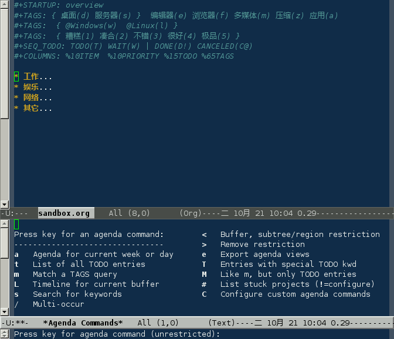

事件默认有两种状态“TODO”、“DONE”，在项标题上 C-c C-t 切换事件状态；M-S-RET 新建事件
在文件头部定义事件状态：
#+SEQ_TODO: TODO |DONE CANCELED #+SEQ_TODO: TODO(T)
| DONE(D) CANCELED(C) #+SEQ_TODO: TODO(T!) | DONE(D@)
CANCELED(C@/!)
|
| 分隔完成与未完成两种状态，完成状态会打上 CLOSED 时间戳 |
|
设定快捷键 |
|
! 打上时间戳；@ 要求说明 |
也可以在配置文件中设置全局事件状态：
(setq org-todo-keywords
'((sequence "TODO" "|" "DONE" "CANCELED")
(sequence "REPORT" "BUG" "KNOWNCAUSE" "|" "FIXED")
))
| C-u C-c C-t | 手动输入 TODO 状态，如果设定快捷则使用快捷键输入 |
| S-right | 循环切换 TODO 状态，两个以上 TODO 状态时使用 |
| S-left | |
| C-S-right | 组间切换 |
| C-S-left | |
| C-c C-v | 查询视图 |
| C-c / t | |
| C-c a t | 全局 TODO 列表 |
在 Emacs 配置文件 .emacs 定义日程表快捷键：
(define-key global-map "\C-ca" 'org-agenda)
C-c [ 将当前文件加入日程表，C-c a

| a | 本周事件 |
| t | 显示所有事件 |
| m | 查询标签 |
| L | 当前缓冲区时间线 |
| s | 查询关键词 |
| T | 查询带 TODO 关键词的项 |
| M | 查询带 TODO 关键词的标签 |
| # | 显示已停止事件 |
| q | 退出日程表 |
可以将多个 org 文件从日程表加入、移除，或者将日程表锁定在当前 org 文件的某个分支：
| C-c [ | 将当前文件加入日程表。如果已加入，移动到前面 |
| C-c ] | 将当前文件从日程表中移除 |
| C-c C-x < | 锁定到当前树(只显示当前树的事件) |
| C-c C-x > | 解除锁定 |